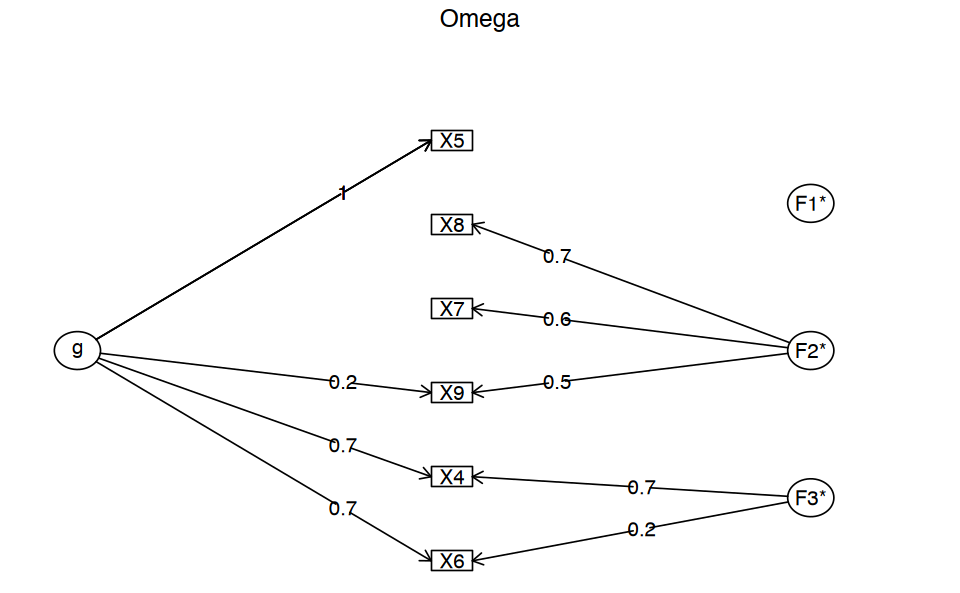

# Carica il file _common.R per impostazioni di pacchetti e opzioni
here::here("code", "_common.R") |> source()
# Carica pacchetti aggiuntivi
pacman::p_load(lavaan, modelsummary)29 Punteggio totale e modello fattoriale
Prerequisiti
- Leggere il capitolo 6, Factor Analysis and Principal Component Analysis, del testo Principles of psychological assessment di Petersen (2024).
Concetti e Competenze Chiave
Preparazione del Notebook
In questo capitolo discute l’uso del punteggio totale del test quale misura del costrutto latente. Questa è una pratica largamente usata, ma solo in parte giustificata. Esamineremo a questo proposito le considerazioni di McNeish e Wolf (2020).
29.1 Punteggio totale e modello fattoriale parallelo
McNeish e Wolf (2020) richiamano l’attenzione sul fatto che usare il punteggio totale quale misura di un costrutto è possibile solo quando i dati soddisfano i vincoli di un modello fattoriale parallelo.
Consideriamo l’esempio seguente, nel quale McNeish e Wolf (2020) esaminano i dati “classici” di Holzinger and Swineford (1939), i quali si riferiscono ai seguenti item:
- Paragraph comprehension
- Sentence completion
- Word definitions
- Speeded addition
- Speeded dot counting
- Discrimination between curved and straight letters
Leggiamo i dati in R.
d <- rio::import(
here::here("data", "1_Factor_Parallel.csv")
)McNeish e Wolf (2020) sottolineano il fatto che il punteggio totale
\[ \text{Punteggio totale} = \text{Item 1 + Item 2 + Item 3 + Item 4 + Item 5 + Item 6} \]
rappresenta l’idea che ciasun item fornisca la stessa quantità di informazione relativamente alla misura del costrutto. Ciò può essere specificato da un modello fattoriale nel quale le saturazioni fattoriali degli item sono tutte uguali a 1. Questo corrisponde al modello parallelo che abbiamo discusso in precedenza. In tali circostanze, i punteggi fattoriali del test risultano perfettamente associati al punteggio totale (correlazione uguale a 1). Dunque, se tale modello fattoriale è giustificato dai dati, questo giustifica l’uso del punteggio totale del test quale misura del costrutto.
È facile verificare tali affermazioni. Implementiamo il modello parallelo.
m_parallel <-
"
# all loadings are fixed to one
f1 =~ 1*X4 + 1*X5 + 1*X6 + 1*X7 + 1*X8 + 1*X9
# all residual variances constrained to same value
X4 ~~ theta*X4
X5 ~~ theta*X5
X6 ~~ theta*X6
X7 ~~ theta*X7
X8 ~~ theta*X8
X9 ~~ theta*X9
"Adattiamo il modello parallelo ai dati forniti dagli autori.
fit_parallel <- sem(m_parallel, data=d)Calcoliamo il punteggio totale.
d$ts <- with(
d,
X4 + X5 + X6 + X7 + X8 + X9
)Calcoliamo i punteggi fattoriali.
scores <- lavPredict(fit_parallel, method="regression")
d$scores <- as.numeric(scores)Un diagramma a dispersione tra il punteggio totale e i punteggi fattoriali conferma che i due sono perfettamente associati. Quindi, usare il punteggio totale o i punteggi fattoriali è equivalente.
d |>
ggplot(aes(x=ts, y=scores)) +
geom_point()
Tuttavia, questa conclusione è valida solo se il modello parallelo è giustificato per i dati. Se esaminiamo l’output di lavaan vediamo che, nel caso presente, questo non è vero.
# report output with fit measures and standardized estimates
out = summary(fit_parallel, fit.measures = TRUE, standardized = TRUE)
print(out)lavaan 0.6-19 ended normally after 13 iterations
Estimator ML
Optimization method NLMINB
Number of model parameters 7
Number of equality constraints 5
Number of observations 301
Model Test User Model:
Test statistic 325.899
Degrees of freedom 19
P-value (Chi-square) 0.000
Model Test Baseline Model:
Test statistic 568.519
Degrees of freedom 15
P-value 0.000
User Model versus Baseline Model:
Comparative Fit Index (CFI) 0.446
Tucker-Lewis Index (TLI) 0.562
Loglikelihood and Information Criteria:
Loglikelihood user model (H0) -2680.931
Loglikelihood unrestricted model (H1) -2517.981
Akaike (AIC) 5365.862
Bayesian (BIC) 5373.276
Sample-size adjusted Bayesian (SABIC) 5366.933
Root Mean Square Error of Approximation:
RMSEA 0.232
90 Percent confidence interval - lower 0.210
90 Percent confidence interval - upper 0.254
P-value H_0: RMSEA <= 0.050 0.000
P-value H_0: RMSEA >= 0.080 1.000
Standardized Root Mean Square Residual:
SRMR 0.206
Parameter Estimates:
Standard errors Standard
Information Expected
Information saturated (h1) model Structured
Latent Variables:
Estimate Std.Err z-value P(>|z|) Std.lv
f1 =~
X4 1.000 0.633
X5 1.000 0.633
X6 1.000 0.633
X7 1.000 0.633
X8 1.000 0.633
X9 1.000 0.633
Std.all
0.551
0.551
0.551
0.551
0.551
0.551
Variances:
Estimate Std.Err z-value P(>|z|) Std.lv
.X4 (thet) 0.920 0.034 27.432 0.000 0.920
.X5 (thet) 0.920 0.034 27.432 0.000 0.920
.X6 (thet) 0.920 0.034 27.432 0.000 0.920
.X7 (thet) 0.920 0.034 27.432 0.000 0.920
.X8 (thet) 0.920 0.034 27.432 0.000 0.920
.X9 (thet) 0.920 0.034 27.432 0.000 0.920
f1 0.400 0.045 8.803 0.000 1.000
Std.all
0.697
0.697
0.697
0.697
0.697
0.697
1.000
Dunque, per questi dati, il punteggio totale può ovviamente essere calcolato. Ma non fornisce una misura adeguata del costrutto. Dunque, il punteggio totale non dovrebbe essere usato nel caso dei dati ottenuti con questo test.
29.2 Punteggio totale e modello fattoriale congenerico
Gli autori adattano ai dati un modello congenerico.
m_congeneric <-
'
#all loadings are uniquely estimated
f1 =~ NA*X4 + X5 + X6 + X7 + X8 + X9
#constrain factor variance to 1
f1 ~~ 1*f1
'# Fit above model
fit_congeneric <- sem(m_congeneric, data=d)parameterEstimates(fit_congeneric, standardized = TRUE) %>%
dplyr::filter(op == "=~") %>%
dplyr::select(
"Latent Factor" = lhs,
Indicator = rhs,
B = est,
SE = se,
Z = z,
"p-value" = pvalue,
Beta = std.all
) %>%
knitr::kable(
digits = 3, booktabs = TRUE, format = "markdown",
caption = "Factor Loadings"
)
Table: Factor Loadings
|Latent Factor |Indicator | B| SE| Z| p-value| Beta|
|:-------------|:---------|-----:|-----:|------:|-------:|-----:|
|f1 |X4 | 0.963| 0.059| 16.274| 0.000| 0.824|
|f1 |X5 | 1.121| 0.067| 16.835| 0.000| 0.846|
|f1 |X6 | 0.894| 0.058| 15.450| 0.000| 0.792|
|f1 |X7 | 0.195| 0.071| 2.767| 0.006| 0.170|
|f1 |X8 | 0.185| 0.063| 2.938| 0.003| 0.180|
|f1 |X9 | 0.278| 0.065| 4.245| 0.000| 0.258|Si noti che le saturazioni fattoriali sono molto diverse tra loro, suggerendo che il punteggio del costrutto si relaziona in modo diverso con ciascun item e che sarebbe inappropriato stimare il punteggio del costrutto assegnando un peso unitario agli item.
McNeish e Wolf (2020) calcolano poi i punteggi fattoriali del modello congenerico.
scores_cong <- lavPredict(fit_congeneric, method="regression")
d$scores_cong <- as.numeric(scores_cong)Il grafico seguente mostra la relazione tra i punteggi fattoriali e il punteggio totale.
d |>
ggplot(aes(x=ts, y=scores_cong)) +
geom_point()
Nel caso presente, il coefficiente di determinazione tra punteggio totale e punteggi fattoriali è 0.77.
cor(d$ts, d$scores_cong)^2
0.765992021080728
Secondo gli autori, ciò significa che due persone con un punteggio totale identico potrebbero avere punteggi di modello congenerico potenzialmente diversi perché hanno raggiunto il loro particolare punteggio totale approvando item diversi. Poiché il modello congenerico assegna pesi diversi agli item, ciascun item contribuisce in modo diverso al punteggio fattoriale del modello congenerico, il che non è vero per il punteggio totale.
Si noti che, per i dati di Holzinger and Swineford (1939), neppure un modello congenerico ad un fattore si dimostra adeguato.
out = summary(fit_congeneric, fit.measures = TRUE, standardized = TRUE)
print(out)lavaan 0.6-19 ended normally after 16 iterations
Estimator ML
Optimization method NLMINB
Number of model parameters 12
Number of observations 301
Model Test User Model:
Test statistic 115.366
Degrees of freedom 9
P-value (Chi-square) 0.000
Model Test Baseline Model:
Test statistic 568.519
Degrees of freedom 15
P-value 0.000
User Model versus Baseline Model:
Comparative Fit Index (CFI) 0.808
Tucker-Lewis Index (TLI) 0.680
Loglikelihood and Information Criteria:
Loglikelihood user model (H0) -2575.664
Loglikelihood unrestricted model (H1) -2517.981
Akaike (AIC) 5175.328
Bayesian (BIC) 5219.813
Sample-size adjusted Bayesian (SABIC) 5181.756
Root Mean Square Error of Approximation:
RMSEA 0.198
90 Percent confidence interval - lower 0.167
90 Percent confidence interval - upper 0.231
P-value H_0: RMSEA <= 0.050 0.000
P-value H_0: RMSEA >= 0.080 1.000
Standardized Root Mean Square Residual:
SRMR 0.129
Parameter Estimates:
Standard errors Standard
Information Expected
Information saturated (h1) model Structured
Latent Variables:
Estimate Std.Err z-value P(>|z|) Std.lv
f1 =~
X4 0.963 0.059 16.274 0.000 0.963
X5 1.121 0.067 16.835 0.000 1.121
X6 0.894 0.058 15.450 0.000 0.894
X7 0.195 0.071 2.767 0.006 0.195
X8 0.185 0.063 2.938 0.003 0.185
X9 0.278 0.065 4.245 0.000 0.278
Std.all
0.824
0.846
0.792
0.170
0.180
0.258
Variances:
Estimate Std.Err z-value P(>|z|) Std.lv
f1 1.000 1.000
.X4 0.437 0.056 7.775 0.000 0.437
.X5 0.500 0.071 6.998 0.000 0.500
.X6 0.474 0.054 8.777 0.000 0.474
.X7 1.278 0.105 12.211 0.000 1.278
.X8 1.023 0.084 12.204 0.000 1.023
.X9 1.080 0.089 12.132 0.000 1.080
Std.all
1.000
0.320
0.285
0.372
0.971
0.967
0.933
Se trascuriamo le considerazioni sulla struttura fattoriale e esaminiamo (per esempio) unicamente il coefficiente omega, finiamo per trovare una risposta accettabile, ma sbagliata.
psych::omega(d[, 1:6])Caricamento dei namespace richiesti: GPArotation
Omega
Call: omegah(m = m, nfactors = nfactors, fm = fm, key = key, flip = flip,
digits = digits, title = title, sl = sl, labels = labels,
plot = plot, n.obs = n.obs, rotate = rotate, Phi = Phi, option = option,
covar = covar)
Alpha: 0.72
G.6: 0.76
Omega Hierarchical: 0.55
Omega H asymptotic: 0.65
Omega Total 0.84
Schmid Leiman Factor loadings greater than 0.2
g F1* F2* F3* h2 h2 u2 p2 com
X4 0.73 0.68 1.00 1.00 0.00 0.53 1.99
X5 0.96 0.92 0.92 0.08 1.00 1.01
X6 0.69 0.22 0.54 0.54 0.46 0.90 1.22
X7 0.56 0.33 0.33 0.67 0.03 1.15
X8 0.75 0.59 0.59 0.41 0.05 1.12
X9 0.22 0.49 0.29 0.29 0.71 0.16 1.41
With Sums of squares of:
g F1* F2* F3* h2
2.02 0.00 1.11 0.54 2.67
general/max 0.75 max/min = 622.07
mean percent general = 0.44 with sd = 0.43 and cv of 0.97
Explained Common Variance of the general factor = 0.55
The degrees of freedom are 0 and the fit is 0
The number of observations was 301 with Chi Square = 0.03 with prob < NA
The root mean square of the residuals is 0
The df corrected root mean square of the residuals is NA
Compare this with the adequacy of just a general factor and no group factors
The degrees of freedom for just the general factor are 9 and the fit is 0.48
The number of observations was 301 with Chi Square = 142.26 with prob < 3.5e-26
The root mean square of the residuals is 0.17
The df corrected root mean square of the residuals is 0.21
RMSEA index = 0.222 and the 10 % confidence intervals are 0.191 0.255
BIC = 90.9
Measures of factor score adequacy
g F1* F2* F3*
Correlation of scores with factors 0.96 0.08 0.83 0.96
Multiple R square of scores with factors 0.93 0.01 0.68 0.91
Minimum correlation of factor score estimates 0.86 -0.99 0.36 0.83
Total, General and Subset omega for each subset
g F1* F2* F3*
Omega total for total scores and subscales 0.84 0.92 0.66 0.86
Omega general for total scores and subscales 0.55 0.92 0.04 0.61
Omega group for total scores and subscales 0.27 0.00 0.61 0.25
È invece necessario ipotizzare un modello congenerico a due fattori.
m2f_cong <- '
# all loadings are uniquely estimated on each factor
f1 =~ NA*X4 + X5 + X6
f2 =~ NA*X7 + X8 + X9
# constrain factor variancse to 1
f1 ~~ 1*f1
f2 ~~ 1*f2
# estimate factor covariance
f1 ~~ f2
'# Fit above model
fit_2f_congeneric <- sem(m2f_cong, data=d)Solo questo modello fornisce un adattamento adeguato ai dati.
out = summary(fit_2f_congeneric, fit.measures = TRUE, standardized = TRUE)
print(out)lavaan 0.6-19 ended normally after 18 iterations
Estimator ML
Optimization method NLMINB
Number of model parameters 13
Number of observations 301
Model Test User Model:
Test statistic 14.736
Degrees of freedom 8
P-value (Chi-square) 0.064
Model Test Baseline Model:
Test statistic 568.519
Degrees of freedom 15
P-value 0.000
User Model versus Baseline Model:
Comparative Fit Index (CFI) 0.988
Tucker-Lewis Index (TLI) 0.977
Loglikelihood and Information Criteria:
Loglikelihood user model (H0) -2525.349
Loglikelihood unrestricted model (H1) -2517.981
Akaike (AIC) 5076.698
Bayesian (BIC) 5124.891
Sample-size adjusted Bayesian (SABIC) 5083.662
Root Mean Square Error of Approximation:
RMSEA 0.053
90 Percent confidence interval - lower 0.000
90 Percent confidence interval - upper 0.095
P-value H_0: RMSEA <= 0.050 0.402
P-value H_0: RMSEA >= 0.080 0.159
Standardized Root Mean Square Residual:
SRMR 0.035
Parameter Estimates:
Standard errors Standard
Information Expected
Information saturated (h1) model Structured
Latent Variables:
Estimate Std.Err z-value P(>|z|) Std.lv
f1 =~
X4 0.965 0.059 16.296 0.000 0.965
X5 1.123 0.067 16.845 0.000 1.123
X6 0.895 0.058 15.465 0.000 0.895
f2 =~
X7 0.659 0.080 8.218 0.000 0.659
X8 0.733 0.077 9.532 0.000 0.733
X9 0.599 0.075 8.025 0.000 0.599
Std.all
0.826
0.847
0.793
0.575
0.712
0.557
Covariances:
Estimate Std.Err z-value P(>|z|) Std.lv
f1 ~~
f2 0.275 0.072 3.813 0.000 0.275
Std.all
0.275
Variances:
Estimate Std.Err z-value P(>|z|) Std.lv
f1 1.000 1.000
f2 1.000 1.000
.X4 0.433 0.056 7.679 0.000 0.433
.X5 0.496 0.072 6.892 0.000 0.496
.X6 0.472 0.054 8.732 0.000 0.472
.X7 0.881 0.100 8.807 0.000 0.881
.X8 0.521 0.094 5.534 0.000 0.521
.X9 0.798 0.087 9.162 0.000 0.798
Std.all
1.000
1.000
0.318
0.282
0.371
0.670
0.492
0.689
Nel contesto di questi dati, l’utilizzo di un modello congenerico non è sufficiente a giustificare l’impiego del punteggio totale, che rappresenta la somma dei punteggi degli item. Questo perché, nel caso specifico, sommando i punteggi di tutti gli item, finiremmo per includere misurazioni di due costrutti distinti.
29.3 Session Info
sessionInfo()R version 4.4.1 (2024-06-14)
Platform: aarch64-apple-darwin20
Running under: macOS 15.0.1
Matrix products: default
BLAS: /Library/Frameworks/R.framework/Versions/4.4-arm64/Resources/lib/libRblas.0.dylib
LAPACK: /Library/Frameworks/R.framework/Versions/4.4-arm64/Resources/lib/libRlapack.dylib; LAPACK version 3.12.0
locale:
[1] C
time zone: Europe/Rome
tzcode source: internal
attached base packages:
[1] stats graphics grDevices utils datasets methods
[7] base
other attached packages:
[1] modelsummary_2.2.0 nortest_1.0-4 MASS_7.3-61
[4] ggokabeito_0.1.0 viridis_0.6.5 viridisLite_0.4.2
[7] ggpubr_0.6.0 ggExtra_0.10.1 gridExtra_2.3
[10] patchwork_1.3.0 bayesplot_1.11.1 semTools_0.5-6
[13] semPlot_1.1.6 lavaan_0.6-19 psych_2.4.6.26
[16] scales_1.3.0 markdown_1.13 knitr_1.48
[19] lubridate_1.9.3 forcats_1.0.0 stringr_1.5.1
[22] dplyr_1.1.4 purrr_1.0.2 readr_2.1.5
[25] tidyr_1.3.1 tibble_3.2.1 ggplot2_3.5.1
[28] tidyverse_2.0.0 here_1.0.1
loaded via a namespace (and not attached):
[1] rstudioapi_0.16.0 jsonlite_1.8.9 magrittr_2.0.3
[4] TH.data_1.1-2 estimability_1.5.1 farver_2.1.2
[7] nloptr_2.1.1 rmarkdown_2.28 vctrs_0.6.5
[10] Cairo_1.6-2 minqa_1.2.8 base64enc_0.1-3
[13] rstatix_0.7.2 htmltools_0.5.8.1 broom_1.0.7
[16] Formula_1.2-5 htmlwidgets_1.6.4 plyr_1.8.9
[19] sandwich_3.1-1 rio_1.2.3 emmeans_1.10.4
[22] zoo_1.8-12 uuid_1.2-1 igraph_2.0.3
[25] mime_0.12 lifecycle_1.0.4 pkgconfig_2.0.3
[28] Matrix_1.7-0 R6_2.5.1 fastmap_1.2.0
[31] shiny_1.9.1 digest_0.6.37 OpenMx_2.21.12
[34] fdrtool_1.2.18 colorspace_2.1-1 rprojroot_2.0.4
[37] Hmisc_5.1-3 labeling_0.4.3 fansi_1.0.6
[40] timechange_0.3.0 abind_1.4-8 compiler_4.4.1
[43] withr_3.0.1 glasso_1.11 htmlTable_2.4.3
[46] backports_1.5.0 carData_3.0-5 R.utils_2.12.3
[49] ggsignif_0.6.4 GPArotation_2024.3-1 corpcor_1.6.10
[52] gtools_3.9.5 tools_4.4.1 pbivnorm_0.6.0
[55] foreign_0.8-87 zip_2.3.1 httpuv_1.6.15
[58] nnet_7.3-19 R.oo_1.26.0 glue_1.8.0
[61] quadprog_1.5-8 promises_1.3.0 nlme_3.1-166
[64] lisrelToR_0.3 grid_4.4.1 pbdZMQ_0.3-13
[67] checkmate_2.3.2 cluster_2.1.6 reshape2_1.4.4
[70] generics_0.1.3 gtable_0.3.5 tzdb_0.4.0
[73] R.methodsS3_1.8.2 data.table_1.16.0 hms_1.1.3
[76] car_3.1-3 utf8_1.2.4 tables_0.9.31
[79] sem_3.1-16 pillar_1.9.0 IRdisplay_1.1
[82] rockchalk_1.8.157 later_1.3.2 splines_4.4.1
[85] lattice_0.22-6 survival_3.7-0 kutils_1.73
[88] tidyselect_1.2.1 miniUI_0.1.1.1 pbapply_1.7-2
[91] stats4_4.4.1 xfun_0.48 qgraph_1.9.8
[94] arm_1.14-4 stringi_1.8.4 pacman_0.5.1
[97] boot_1.3-31 evaluate_1.0.0 codetools_0.2-20
[100] mi_1.1 cli_3.6.3 RcppParallel_5.1.9
[103] IRkernel_1.3.2 rpart_4.1.23 xtable_1.8-4
[106] repr_1.1.7 munsell_0.5.1 Rcpp_1.0.13
[109] coda_0.19-4.1 png_0.1-8 XML_3.99-0.17
[112] parallel_4.4.1 jpeg_0.1-10 lme4_1.1-35.5
[115] mvtnorm_1.3-1 insight_0.20.5 openxlsx_4.2.7.1
[118] crayon_1.5.3 rlang_1.1.4 multcomp_1.4-26
[121] mnormt_2.1.1